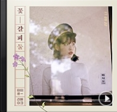

1. 미아

2. 하루 끝

3. 분홍신
4. 금요일에 만나요

5. 마음

6. 스물셋
7. 푸르던

8. 밤편지

9. 가을 아침
9. 가을 아침
이 밤 그날의 반딧불을
당신의 창 가까이 보낼게요
음 사랑한다는 말이에요
나 우리의 첫 입맞춤을 떠올려
그럼 언제든 눈을 감고
음 가장 먼 곳으로 가요
난 파도가 머물던
모래 위에 적힌 글씨처럼
그대가 멀리
사라져 버릴 것 같아
늘 그리워 그리워
여기 내 마음속에
모든 말을
다 꺼내어 줄 순 없지만
사랑한다는 말이에요
어떻게 나에게
그대란 행운이 온 걸까
지금 우리 함께 있다면
아 얼마나 좋을까요
난 파도가 머물던
모래 위에 적힌 글씨처럼
그대가 멀리
사라져 버릴 것 같아
또 그리워 더 그리워
나의 일기장 안에
모든 말을
다 꺼내어 줄 순 없지만
사랑한다는 말
이 밤 그날의 반딧불을
당신의
창 가까이 띄울게요
음 좋은 꿈 이길 바라요